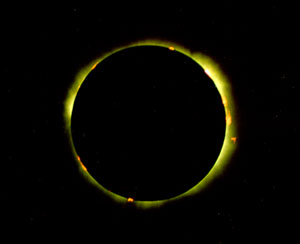
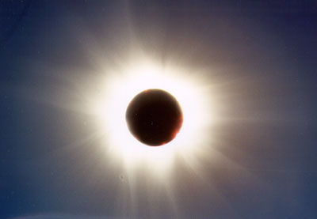

SJAA
Ephemeris
SJAA Ephemeris |
A Miracle Near MunichErnie Piini |
Do you believe in miracles? I do. After a cliff-hanger experience in Germany - it can happen.
Early on the morning of August 11th in Einsbach, Germany, our home away from home for the eclipse, the sun rose against a beautifully clear blue sky. It was like India in 1995 and Australia in February 1999. Not a cloud in the entire sky.
After breakfast I made a call to Beth Yule, the tour agent for Amateur Astronomers Inc. (AAI) from New Jersey, for instructions as to where to join her group. I've known Beth and members of AAI since the eclipse expedition to the African Sahara Desert in 1973 and I was pleased that she invited us along, and also had a chance to meet eclipse chasing friends of old.
We met on a soccer field in the small town of Altomunster which lies very close to the eclipse centerline about 30 km (18 miles) northwest of Munich (Latitude: 48§, 23', 05" N; Longitude: 11§. 14', 50" E. to be exact). When we arrived the sky was completely overcast with a threat of rain. My cousin, Mienrado Pifferini, a huge and strong Swiss and youngest of a family of 16, carried my telescope and mount to the site as if they were toys. There we set up next to Joe and LaVonne Shrock, good friends of mine from Mt. View, California.
The telescope at this point was only partially assembled with another half-hour of set-up and alignment to go. For the first time in 21 eclipses I was forced to set up while it was raining. About this time I began to wonder if this was all worth it and did we have a chance to see the eclipse? Totality was still three hours away.
Final assembly of equipment was done under an umbrella and heavy rain. I waited about an hour before I could focus my two telescopes and the camcorder. The sun was playing peek-a-boo with the clouds and moments like this made it possible to focus with the filter off.
First contact was reported at around 11:12 a.m. With totality scheduled to occur around 12:36 p.m. the hour-plus wait was agonizing. We saw small blue sky openings far to the West and much time was spent studying the distance, direction of travel, and point of possible interception with the eclipsing sun. A couple of these clearings came too soon and moved past our site. More rain and even a sound of thunder off in the distance made our chances even more gloomy.
But one clearing had the necessary ingredients if all conditions held. And they did!
At 12:36:31 p.m., second contact occurred with a show of Baily's Beads and a brilliant "Diamond Ring". I ran off 14 one-second exposures using Kodak Royal-400 print film with my 3-way Telescope equipped with my special U2 filter. This filter is designed to eliminate much of the stray corona around the eclipsed sun and enhance the beautiful coronal streamers. Since this eclipse occurred during a maximum sunspot period, the shape of the corona was quite symmetrical but spiky.
My C-90 telescope, which rides piggyback on the 3-way telescope, captured the fast changing display of Baily's Beads, Diamond Ring, and rosy red prominences, using Kodak Royal-100 print film. I made 27 exposures each at 1/60th second.
My Canon 2000 camcorder is bracketed to one side of the 3-Way Telescope. I use it to record exact timings of totality events plus any other event which might require a wide angle view.
Since all my cameras are remotely controlled, running off over 40 exposures is easily done. I had time to allow several of my cousins to peer into my C-90 Telescope and gaze at the garden of rosy red prominences. I counted eight artistically spaced magnetic storms around the black disc of the moon. One of the prominences had a section that was disconnected and in space.
This eclipse was a real beauty. Was it because we prayed so hard for the sky to clear or was it simply an exceptional sight? The planet Venus was hidden behind some clouds but I finally got to see it moments after third contact. Third contact was recorded at 12:38:48 p.m., making our total eclipse time 2 minutes and 17 seconds.
Minutes later the sky became totally overcast with threat of more rain.
|  |
The temperature dropped 8§ from 69 §F around 11:45 a.m. to 61§F shortly after the end of totality. The humidity varied between 95 and 100 percent as would be expected in rainy weather.
The wind was mild during the entire event with only a slight breeze during totality.
No shadow bands were seen as the green grass of the soccer field made it difficult to see the minute changes in contrast.
That evening, the entire AAI group and our contingent from Switzerland, enjoyed a dinner party hosted by Beth Yule. A one-man orchestra played a variety of German music on his piano and accordion. He even played John Denver's "Country Road" for our group. This was the song played at Meinrado and Sabrina Pifferini's wedding earlier this year. Their wedding party parade of two busses included a donkey that was transported by trailer to the church ceremony. There the animal was side-saddled with traditional wedding candies and was a hit for all who attended.
Our side trips before and after the eclipse included much of the picturesque country where my parents and elder brothers and sister came from. The valleys, shouldered by the shear cliffs of the alps and speckled with homes built totally with rocks, is a sight to behold. We even took a walk up to the home where my family resided and laughed at the second-story balcony in which my brother Enos, then 5-years old, fell off onto the dirt path below.
My mother used to tell us about the thunder and lightning that occurs in the alps. For about three nights in a row they happened. I was petrified at how noisy and scary it gets. It rains simultaneously hard and steady and the clouds diffuse each lightning bolt.
|  |
One day we took the train into Milan, Italy and visited the famous Duoma. My folks often talked about their honeymoon trip there. We climbed onto the roof to get a close-up view of the many figurines and statues that make up this majestic cathedral.
In Germany we enjoyed the cleanliness of the country, its vineyards and green fields of corn. We visited the main square in Munich weaving through the crowds to see some of the historic structures. Finally got to see the Glockenspiel mechanized clock tower but arrived about 20 minutes too late to see the 11 o'clock show. We also took in just a smidgen of the Deutch Museum. I chose to see the Sun Dial garden on the rooftop and later the popular Amateur Astronomy section. The place is like the Smithsonian. Plan on spending several days to see it all properly.
Finally I must say that the eclipse was truly a miracle. I've had the opportunity to see many eclipses in the past but I prayed that my brother and cousins would get to see this one. They may never go to see another but this will surely remain in their memories as long as they live. Viva el eclisse.
The Miracle eclipse in a nutshell, by May Coon:
| Ernie, video, 3 camera | Invention |
| Eclipse map | Intention |
| Weather at first | Attention |
| Cloudy | Contention |
| Eclipse clearing | Suspension |
| Wipe brow | Sustention |
I wish to thank Joe Heim and May Coon for their assistance in editing this article. Ernie Piini
| Ernie Piini; last updated: February 05, 2002 | Prev Next |